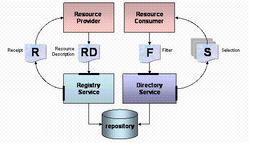

The Merlin Discovery platform will provide two principal set of service interfaces and a number of immutable data types that will facilitate the publication and subsequent discovery of description of available services and componen types. The two interfaces groups address the respective roles of registration and discovery.
A registration interface provides operations supporting the registration of resource description, an object that describes an available resource or service. The resource description contains information about an artifact, its URI, a textual description, URI references to legal terms and conditions, its effective date and validity, and terms and conditions concerning the disclosure of the description by a registry operator, and last but not least - a reference to block defintion or remote service access point.
The discovery interfaces provide a basic set of operations enabling simple lookup of a single resource description and operations supporting general queries based on supplied filter arguments that return a set of results in the form of selections. The selection instances returned from a query are lightweight structures containing only a URI and a ranking value. A client presenting information to an end-user can expand the content of a particular selection by invoking operations on a directory to resolve the value of a selection to a resource description. This approach allows the effective de-coupling of query resolution form presentation, enabling enhancement of the end-user experience.
The following illustration depicts the cycle between the creation of a resource description and the subsequent generation of a selection set by a discovery service. Firstly, a client acting in the role of a resource or capability provider, uses a application to constructs an instance of a ResourceDescription. This value is used as an argument to a register operation on the Registry. A client acting in the role of a resource or capability consumer invokes the find operation on a directory using a filter as the search criteria. The result of the operation is a sequence of ranked selections.
Resource Description registration, receipt creation, search and selection retrieval.
